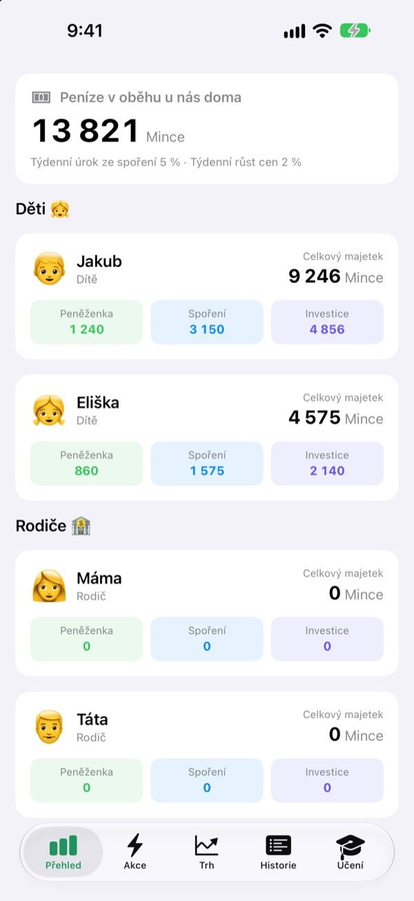
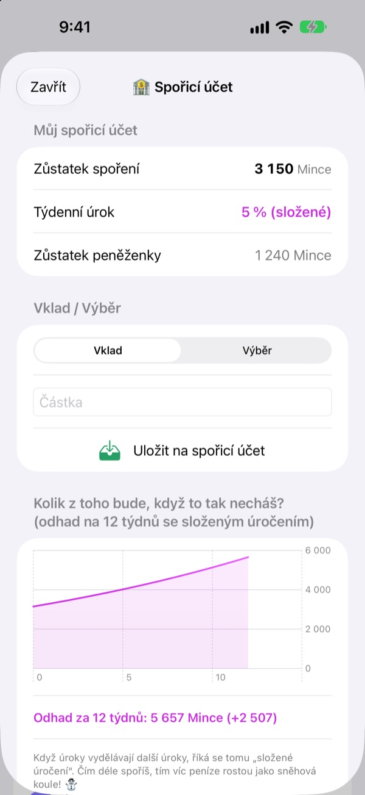
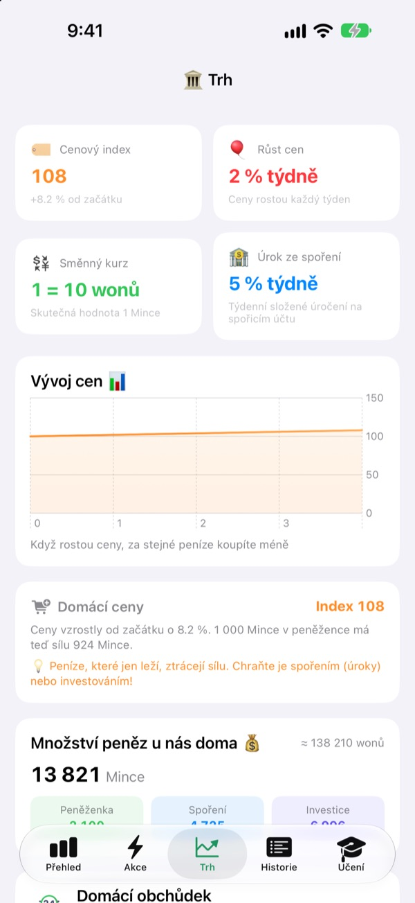
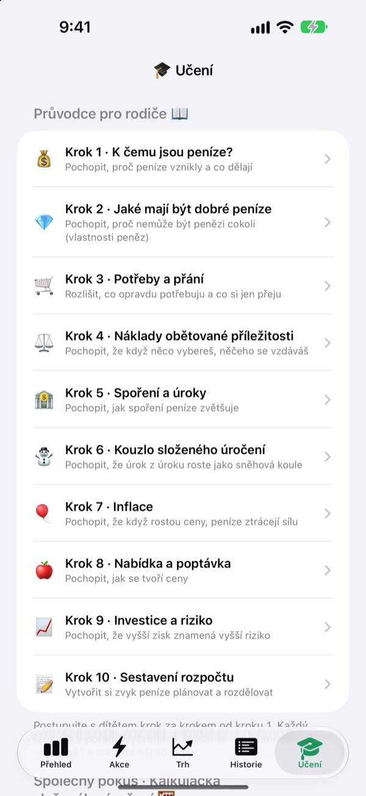

Den výplaty kapesného
jako hodina o penězích
Vy jste centrální banka rodiny, děti jsou vaši klienti. Kapesné dostávají ve vaší vlastní měně, kupují si sladkosti, sledují, jak jim na spoření přibývají úroky, a zažívají vzestupy i pády cvičného fondu.
Všechny funkce jsou zdarma. Skutečné peníze se nikdy nepoužívají.

Kam byste dali 1 000 mincí?
Stejných 1 000 mincí leží v peněžence, na spoření a ve třech fondech. Posouvejte se po týdnech a sledujte, co se s každou částkou děje. Platí stejná pravidla jako v aplikaci.
„Ušetři a přibude.“ Opravdu to dítěti dojde?
Úroky, složené úročení, inflace: čím víc to vysvětlujete, tím vzdálenější to zní. V SukSuk Kapesném děti samy vydělávají, utrácejí a čekají. Jakmile objeví úroky na spoření z minulého týdne, další kapesné míří rovnou na spoření.
Trpělivost, která je vidět
Peníze na spoření každý týden vydělávají složený úrok. Sazbu určujete vy a graf ukáže, kolik z nich bude za 12 týdnů, když se jich nikdo nedotkne.
Pár dní jste aplikaci neotevřeli? Při dalším spuštění se všechny dlužné týdny připíšou najednou.

Jak ceny ujídají z peněženky
Karta Trh ukazuje na jedné obrazovce rodinný cenový index, inflaci, úrokovou sazbu, množství peněz a ceny fondů. Jak ceny rostou, je vidět, o kolik méně se koupí za 1 000 mincí v peněžence.
Děti na číslech vidí, že ležící peníze ztrácejí hodnotu a ušetřené nebo investované ji udrží.

Deset rozhovorů pro vás oba
Průvodce pro rodiče vás provede v deseti krocích: proč potřebujeme peníze, potřeby a přání, náklady obětované příležitosti, spoření a úroky, složené úročení, inflace, investování a riziko až po vlastní rozpočet.
Kalkulačka složeného úročení a kalkulačka cenového experimentu vám dovolí měnit čísla a hned vidět, co se stane.

Tři kroky na začátek
- 1
Pojmenujte měnu
Fazole, Hvězdy, Mince: jak si ji vaše rodina pojmenuje.
- 2
Nastavte rodičovský PIN
Čtyři číslice. Jen ten, kdo ho zná, může dávat kapesné nebo měnit nastavení banky.
- 3
Přidejte rodinu
Přidejte děti a rodiče, vyplaťte první kapesné a můžete začít.
Co kde najdete
- Přehled
- Peněženky, spoření a investice celé rodiny na jeden pohled
- Akce
- Dát nebo odečíst kapesné, Čárový kód položky, Přidat položku, Pozvat dítě, Režim telefonu dítěte, Nastavení banky (vyžaduje rodičovský PIN)
- Trh
- Cenový index, inflace, směnný kurz, úrok ze spoření, množství peněz, ceny fondů
- Historie
- Každý pohyb peněz podle data, člena nebo typu
- Učení
- Průvodce pro rodiče v deseti krocích, kalkulačka složeného úročení, kalkulačka cenového experimentu
- 🐢 Želví jistý fond
- Malé denní výkyvy, pomalý a stálý růst
- 🐰 Králičí růstové akcie
- Nahoru i dolů, ale rostou
- 🚀 Raketové dobrodružné akcie
- Můžou vystřelit, můžou se zřítit
Na začátku platí týdenní úrok ze spoření 5 % a týdenní inflace 2 %. Obojí změníte v Rodičovském režimu v Nastavení banky. Při inflaci 0 % se ceny nemění.
Všechny funkce zdarma
Zdarma
- Vlastní rodinná měna a Rodičovský režim chráněný PINem
- Dávání a odečítání kapesného, Domácí obchůdek a placení čárovým kódem
- Spoření s týdenním složeným úročením
- Tři cvičné fondy s grafy výnosů
- Karta Trh a historie transakcí podle data
- Průvodce pro rodiče v deseti krocích a dvě kalkulačky
- Režim telefonu dítěte a synchronizace přes iCloud
Podpořit vývojáře
- V Rodičovském režimu v Nastavení banky můžete poslat malé spropitné v libovolné výši
- Spropitné nic neodemyká. Aplikace funguje úplně stejně
Žádné reklamy, žádné předplatné. Tlačítko spropitného je jen v Rodičovském režimu, takže děti nikdy neuvidí tlačítko nákupu.
Časté otázky
Jde o skutečné peníze?
Ne. Měna i všechny transakce v aplikaci jsou jen naoko a slouží k učení. Nic není propojené se skutečným bankovním účtem, kartou ani hotovostí.
Jak uvidíme stejné účty i na telefonu dítěte?
Zařízení přihlášená ke stejnému účtu iCloud synchronizují rodinné účty automaticky. Zkontrolujte, že je iCloud zapnutý v Nastavení > Účet Apple > iCloud. Na kartě Akce v části Pozvat dítě můžete vytvořit pozvánku s QR kódem, kterou dítě naskenuje fotoaparátem. Bez iCloudu zůstanou data jen v tom jednom zařízení.
Co je Režim telefonu dítěte?
Promění telefon dítěte v obrazovku jen pro něj. Dítě vidí pouze svou peněženku, investice, historii a lekce, a k opuštění režimu je potřeba rodičovský PIN.
Zapomněl jsem rodičovský PIN.
PIN je uložený jen v zařízení, takže ho neobnoví ani vývojář. Když aplikaci smažete a znovu nainstalujete, můžete ji nastavit od začátku, ale smažou se i dosavadní data.
Jak fungují úroky ze spoření?
Každý týden se ke zůstatku spoření automaticky připíše složený úrok. Sazbu nastavíte v Rodičovském režimu a zameškané týdny se vyrovnají při dalším otevření aplikace.
Odpovídají ceny fondů skutečnému trhu?
Ne. Ceny fondů jsou cvičná data, která se v aplikaci mění jednou denně. Čím rizikovější fond, tím větší výkyvy. Nejde o skutečné finanční produkty.
Proč rostou ceny?
Aby děti pocítily inflaci, rodinný cenový index každý týden trochu stoupne. Tempo změníte, nebo ho nastavením na 0 % vypnete, v Rodičovském režimu v Nastavení banky. Když zároveň trochu zdražíte sladkosti a hračky v Domácím obchůdku, lekce se lépe vryje do paměti.
Jak všechno smazat?
Smazáním aplikace zmizí data uložená v zařízení. Data synchronizovaná do iCloudu smažete v Nastavení > Účet Apple > iCloud > Spravovat úložiště.
Posílají se někam informace o mé rodině?
Ne. Žádná registrace, všechna data zůstávají ve vašem zařízení a ve vašem vlastním účtu iCloud. Vývojář dostává jen zpětnou vazbu, kterou sami pošlete z Rodičovského režimu, a k tomu anonymní statistiky používání a hlášení o pádech.
Na jakých zařízeních aplikace funguje?
Na iPhonu se systémem iOS 17.0 nebo novějším.
Dotazy, chyby nebo nápady? Napište na leeo@kakao.com. Když uvedete model zařízení a verzi iOS, pomůžeme rychleji.